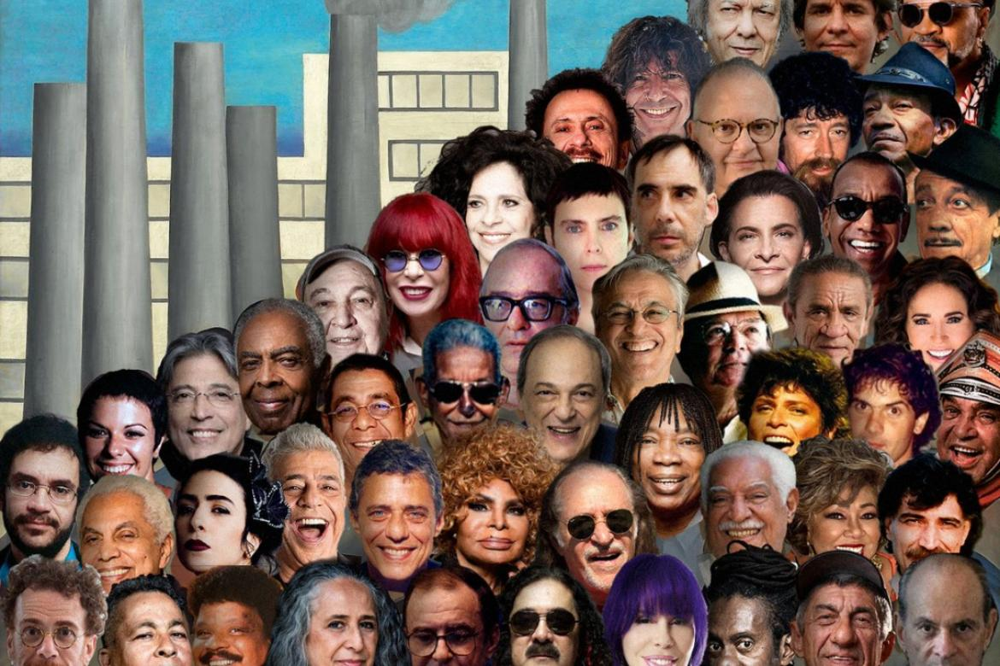
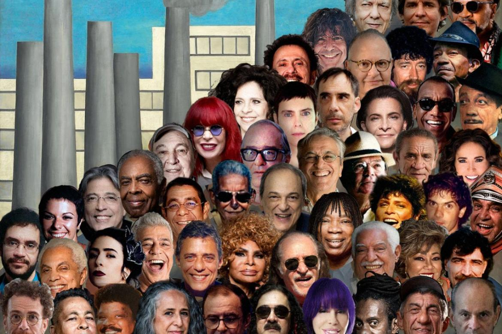

Eunice Kathleen Waymon, conhecida pelo nome artístico Nina Simone (Tryon, 21 de fevereiro de 1933 — Carry-le-Rouet, 21 de abril de 2003) foi uma pianista, cantora, compositora e ativista pelos direitos civis dos negros norte-americanos. É bastante conhecida nos meios musicais do jazz, mas trabalhou com diversos estilos musicais na vida, como música clássica, blues, folk, soul, R&B, gospel e pop.
Milton Nascimento (Rio de Janeiro, 26 de outubro de 1942) é um cantor, compositor e multi-instrumentista brasileiro, reconhecido mundialmente como um dos mais influentes e talentosos músicos da Música Popular Brasileira. Carioca de nascimento, mas mineiro de coração, tornou-se conhecido nacionalmente, quando a canção "Travessia", composta por ele e Fernando Brant, ocupou a segunda posição no Festival Internacional da Canção, de 1967. Tem como parceiros e músicos que regravaram suas canções, nomes como: Wayne Shorter, Pat Metheny, Björk, Peter Gabriel, Sarah Vaughan, Chico Buarque, Gal Costa, Caetano Veloso, Gilberto Gil, Fafá de Belém, Simone e Elis Regina. Já recebeu 5 prêmios Grammy, sendo um Grammy Award de Best World Music Album in 1997. Milton já se apresentou na América do Sul, América do Norte, Europa, Ásia e África.
Gonzaguinha, nome artístico de Luiz Gonzaga do Nascimento Júnior (Rio de Janeiro, 22 de setembro de 1945 – Renascença ou Marmeleiro,[nota 1] 29 de abril de 1991), foi um cantor e compositor brasileiro.
Elis Regina Carvalho Costa (Porto Alegre,17 de março de 1945 — São Paulo, 19 de janeiro de 1982) foi uma cantora brasileira. Conhecida pela competência vocal, musicalidade e presença de palco, foi aclamada tanto no Brasil quanto internacionalmente, e comparada a cantoras como Ella Fitzgerald, Sarah Vaughan e Billie Holiday.Com os sucessos de Falso Brilhante (1975-1977) e Transversal do Tempo (1978), Elis Regina inovou os espetáculos musicais no país. Foi casada com Ronaldo Bôscoli, com quem teve João Marcello Bôscoli (1970); em 1973, casou-se com o pianista César Camargo Mariano, com quem teve dois filhos: Pedro Camargo Mariano (1975) e Maria Rita Camargo Mariano (1977).
Procure mais sobre música